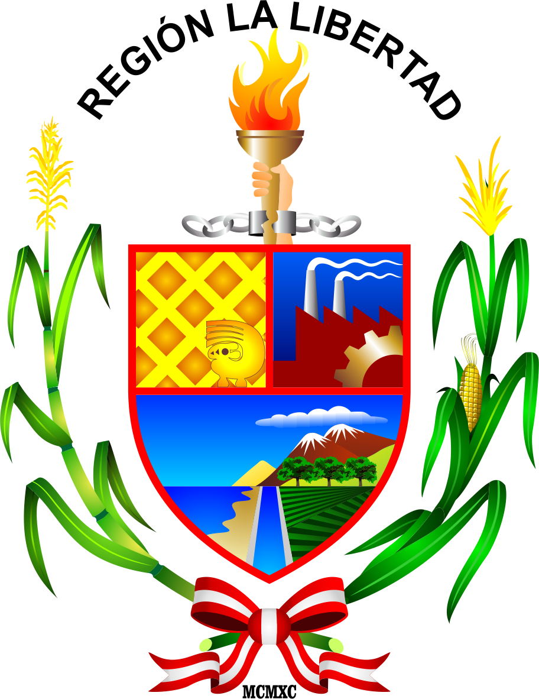
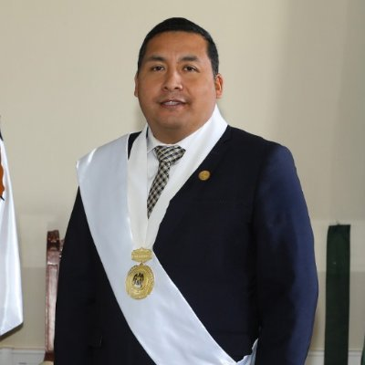

El departamento de la Libertad conoció la influencia Huari y en el Intermedio Tardío, la expansión del Imperio Chimú por toda la costa norte, así como su influencia en las zonas altas del reino de Huamachuco. Posteriormente, esta región fue anexada al Imperio incaico y luego a la corona española.
ESCUDO
El escudo del departamento de la Libertad representa en todo su esplendor el trabajo campesino, el sector agrícola, la industria y el sector económico del departamento. Se trata de un escudo dividido en tres cuarteles que a continuación describiremos.
En el primer cuartel tiene un fondo dorado con pequeños recuadros, este simboliza el potencial minero que tiene la Libertad. La minería se asienta en gran parte del territorio con yacimiento de oro, plata, plomo, zinc y cobre.
En el segundo cuartel se ubica la silueta de una fábrica humeante y un engranaje, estos elementos representan al sector industrial y el comercio en todo el departamento. La Libertad posee importantes industrias que ayudan a su crecimiento. Entre las más conocidas se encuentran Minera Barrick Misquichilca, Pan American Silver, Cementos Pacasmayo, Empresa Agroindustrial Casa Grande, entre otras.
El tercer cuartel muestra un paisaje de ríos, playas, montañas, nevados y bosques. Estos representan el relieve y el turismo del departamento, con lugares importantes que son considerados patrimonio cultural.
Por último se ubican de forma decorativa a los lados una rama de caña y del otro una de maíz, unida con una cinta con los colores de la bandera de Perú. Están representan el sector agrícola del departamento que también proporciona una buena economía. En la parte superior se ubica una mano con una antorcha sobre una cadena rota, esto simboliza la libertad y desarrollo del departamento y sus pobladores.

GOBERNADOR REGIONAL
José Ruiz Vega

El candidato a la Alcaldía de la Municipalidad Provincial de Trujillo - que pertenece a la libertad (MPT) por Alianza Para el Progreso (APP), José Ruiz Vega, asegura tener la experiencia necesaria para administrar la ciudad y gestionar recursos para modernizarla. Cree que de ser elegido transformará a la ciudad.